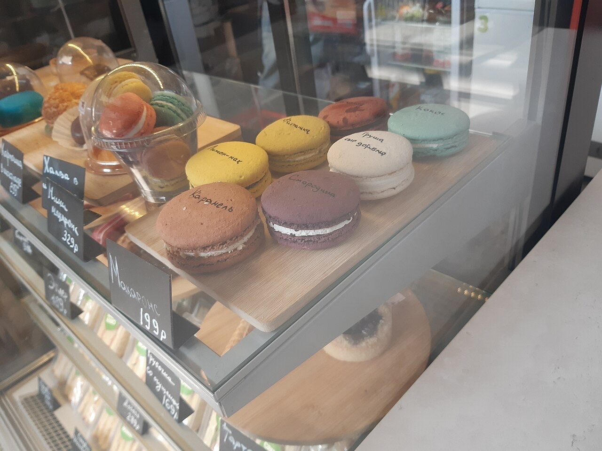

Fotografias ilustrativas — no site final usamos as vossas.
Confeitaria para adoçar o dia.
5,0★ em 85 avaliações no Google.
Ligue ou escreva por WhatsApp antes de passar.
A Brink e Fabrik é uma confeitaria na Rua do Sardoal, na Costa, em Guimarães, com 5,0★ no Google. Passe para um doce, um bolo ou uma pausa com açúcar.

Fotografias ilustrativas — no site final usamos as vossas.
Encomenda
Diga o que precisa e quando quer levantar (ou receber). Respondemos por WhatsApp.
↑ Assim chegaria a mensagem ao vosso WhatsApp. (Nesta demonstração nada é enviado.)
Onde estamos
Proposta para Brink e Fabrik
Esta página foi feita de propósito para Brink e Fabrik por João Machado, programador web aqui de Guimarães. Inclui:
Eu trato do alojamento e da manutenção. Sem compromisso.